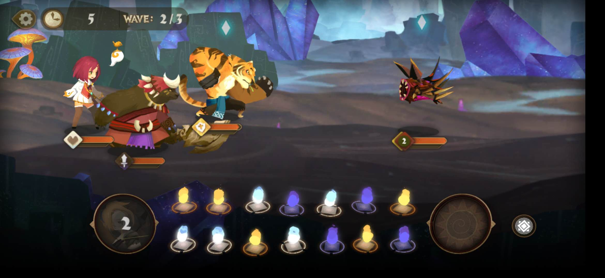
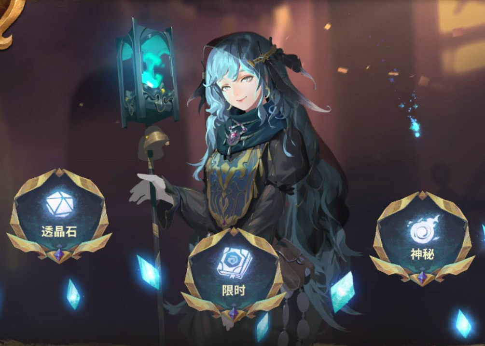
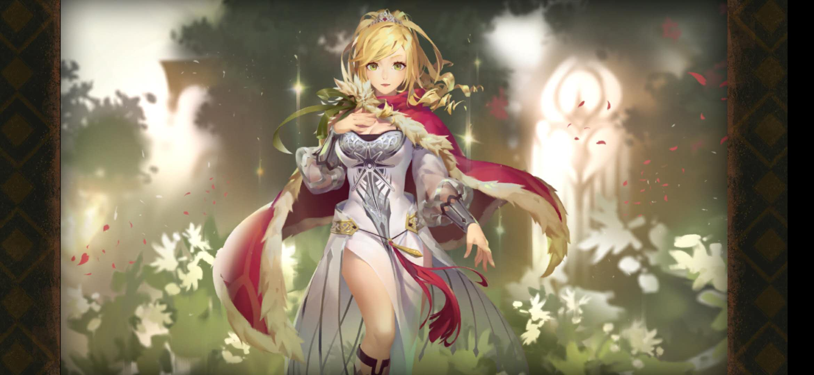
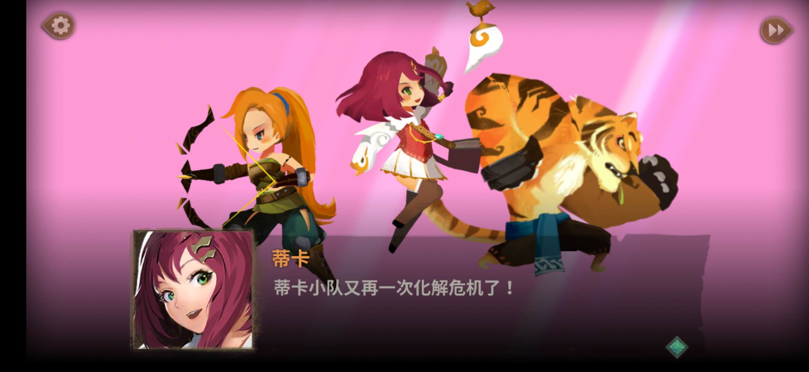
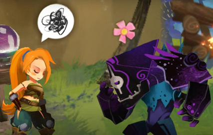

这部分既会贴一些我在扩充库的时候写的一些主观性很强的体验感想，也会写一些偏专业性的分析、反推文章，还有一部分就是做出一款自己的小游戏的过程了啦（暂定为2D横版冒险，不过目前还在学习GML的过程中……所以前一部分就是GMS2的笔记）
世界观与剧情：⭐⭐
常见的未来题材，故事主要围绕被病毒感染的仿生人展开，暂时来看没有让我感到印象深刻。
立绘：⭐⭐
怎么说的，感觉到有在尽力模仿那个游戏，但那是人家的看家本领啊喂……对比下来你这儿的立绘就好丑啊。
战斗：⭐⭐⭐
卡通人物2D射击令人耳目一新，既涉及射击的主题，又比刺激战场等更加轻量化，以及降低了操作性，值得一个好评，总之选择这个玩法作为突围点是很ok的;抄过来一个编队，但是人物不能同时作战，葫芦娃救爷爷也太惨了吧哈哈哈，编队的意义何在;策略性低、操作空间小，再强的boss靠走位+反击就能干掉，中后期可能会无法给玩家提供成就感;
UI：⭐
理由：我相信以其他界面的设计水准，充值界面不至于搞成这样，那么故意做成页游风格是在恶心谁？
1.玩家角色、引导者和卡牌的身份代入问题是世界观的重要入口，要做好包装
2.具体到我们现在的游戏，就是必须明确玩家是以何种视角进入到世界中，小精灵的角色从何而来以及卡牌的包装。
3.游戏第一/三人称视角的利弊分析：
孙大妖怪问节奏大师：音乐游戏需要世界观和剧情吗？
节奏大师：世界观是啥子个意思？我只知道曲库和好友系统
音乐世界Cytus Ⅱ：……果然背靠大佬就是可以为所欲为
Deemo拍拍节奏大师的肩膀深沉地说：知道为啥Taptap评分我是满分你才8.1不？
Phigros：b站萌新围观围观~
回合制消除 剧情 养成
白、黄、紫代表不同人物，滑屏连接同类型颜色可以发动不同的技能（目前已知的连接方式只有单消/二消/四消），连接的颜色球会消失，右侧颜色球向左自动填补；左侧圆圈内为参谋技，右侧圆圈内为宝箱内掉落的技能。本质上是俄罗斯方块和横向格斗游戏玩法的融合，使得游戏获得了一定的策略性。
奇幻、二次元和卡通三种风格并行。在人物立绘、场景绘制、界面美工上都有**奇幻的风格，冷色调较多，重结构轻细节**；但有部分人物又更靠近二次元一些；在剧情和战斗界面则是卡通可爱风的人物模型。下左一图为充满东方奇幻风格的新手引导里的小姐姐，下中图为主线剧情的主角太阳王国公主安洁莉娅，下右图为剧情内Q版可爱的人物模型
  1.剧情活泼：采用表情符号+文字的文本格式，让人物的语气神态更容易被玩家体会

2.人物鲜活：文案人员通过细节刻画人物的功力很足，目前接触到的人物个个都很有特色，还没有见到大众脸：对一切都充满好奇和热情的蒂卡、充满荣誉感的王国治安官娜雅、沉稳有礼的庞、天真理想的安洁公主、外表厉色内心憨厚的刃庞言必称“在下”、“阁下”，娜雅常常提到其王国治安官的身份，刃在面对胡闹的安洁时的那句“八嘎”简直不要太有爱
回到索引